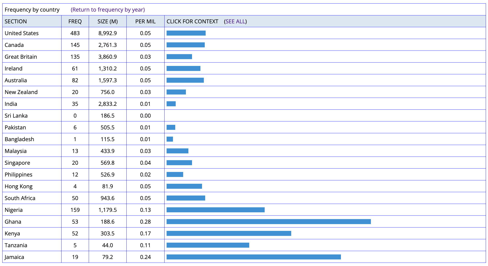

We will talk about:
By the end of this session, students will be able to:
- Define corpus linguistics as an empirical methodology
- Explain key limitations of introspection in linguistic research
- Describe the role of frequency data and patterns in corpus analysis
- Identify and explain the basic steps in corpus-based research
- Reflect on their own stance toward data, intuition, and linguistic evidence
the investigation of linguistic research question
that have been framed in terms of the conditional distribution of linguisitc phenomena
in a linguistic corpus.
(Stefanowitsch, 2020, p. 56)
A linguistic corpus is:
→ A corpus documents “recorded observation of language behavior”
when we can ask native speakers?
→ First two points are worth elaborating.
→ Corpus linguists respectfully disagree with these statements.
Rank the following words by frequency in iWeb (14 billion word Web Corpus):
Don’t turn to next slide until you finish sorting!
| word | freq | freq per million |
|---|---|---|
| the | 746240010 | 53,332.79 |
| and | 387613768 | 27,666.94 |
| dog | 1447231 | 103.30 |
| absolutely | 1027853 | 73.37 |
| obvious | 715011 | 51.04 |
| chair | 621975 | 44.40 |
| meaningful | 297635 | 21.24 |
Is the following expressions grammatical? Yes or No?
different + from/to/than
 See the result here
Corpus has to be selected in relation to the purpose of the study
→ Let’s talk about general research cycle then we will go over with corpus examples.
Research Process
Research is mostly driven by curiosity.
A research question often involves relations between two or more constructs.
Constructs are simply theoretical concepts we are interested in researching.
Linguistic constructs
Extra-linguistic constructs
In corpus-driven linguistic research, we tend to ask following questions:
Research Q: “Is the expression ‘gonna’ more frequent in informal genres?”
Hypothesis: “I expect ‘gonna’ to occur more frequently in TV/Movie subtitles than in Magazine texts because…”
In the same pair, you will be writing your hypothesis.
Template: “I expect [specific pattern] because [reasoning based on experience/knowledge]”
How can I select the one for my research?
Discuss in pair/group:
If you were to create following corpus, what should you include in your corpus? Choose one and brainstorm the data sources you need to collect.
| Genre | # texts | # words | Explanation |
|---|---|---|---|
| Spoken | 44,803 | 127,396,932 | Transcripts of unscripted conversation from more than 150 different TV and radio programs (examples: All Things Considered (NPR), Newshour (PBS), Good Morning America (ABC), Oprah) |
| Fiction | 25,992 | 119,505,305 | Short stories and plays from literary magazines, children’s magazines, popular magazines, first chapters of first edition books 1990-present, and fan fiction. |
| Magazines | 86,292 | 127,352,030 | Nearly 100 different magazines, with a good mix between specific domains like news, health, home and gardening, women, financial, religion, sports, etc. |
| Newspapers | 90,243 | 122,958,016 | Newspapers from across the US, including: USA Today, New York Times, Atlanta Journal Constitution, San Francisco Chronicle, etc. Good mix between different sections of the newspaper, such as local news, opinion, sports, financial, etc. |
| Academic | 26,137 | 120,988,361 | More than 200 different peer-reviewed journals. These cover the full range of academic disciplines, with a good balance among education, social sciences, history, humanities, law, medicine, philosophy/religion, science/technology, and business |
| Genre | # texts | # words | Explanation |
|---|---|---|---|
| Web (Genl) | 88,989 | 129,899,427 | Classified into the web genres of academic, argument, fiction, info, instruction, legal, news, personal, promotion, review web pages (by Serge Sharoff). Taken from the US portion of the GloWbE corpus. |
| Web (Blog) | 98,748 | 125,496,216 | Texts that were classified by Google as being blogs. Further classified into the web genres of academic, argument, fiction, info, instruction, legal, news, personal, promotion, review web pages. Taken from the US portion of the GloWbE corpus. |
| TV/Movies | 23,975 | 129,293,467 | Subtitles from OpenSubtitles.org, and later the TV and Movies corpora. Studies have shown that the language from these shows and movies is even more colloquial / core than the data in actual “spoken corpora”. |
| Total | 485,179 | 1,002,889,754 |
A excellent example of a specialized corpus.
| Disciplinary group | Disciplines | Level 1 | Level 2 | Level 3 | Level 4 | Sum |
|---|---|---|---|---|---|---|
| Arts and Humanities (AH) | Linguistics, English, Philosophy, History, Classics, Archaeology, Comparative American Studies, Other | 231 | 225 | 160 | 77 | 693 |
| Life Sciences (LS) | Biology, Agriculture, Food Sciences, Psychology, Health, Medicine | 172 | 183 | 106 | 193 | 654 |
| Physical Sciences (PS) | Engineering, Chemistry, Computer Science, Physics, Mathematics, Meteorology, Cybernetics & Electronics, Planning, Architecture | 181 | 146 | 156 | 95 | 578 |
| Social Sciences (SS) | Business, Law, Sociology, Politics, Economics, Hospitality Leisure & Tourism Management, Anthropology, Publishing | 203 | 196 | 159 | 202 | 760 |
| Sum | 787 | 750 | 581 | 567 | 2,685 |
| Social purpose | Genre family | Level 1 | Level 2 | Level 3 | Level 4 | Sum |
|---|---|---|---|---|---|---|
| Demonstrating knowledge and understanding | exercise | 28 | 20 | 27 | 27 | 102 |
| explanation | 72 | 54 | 33 | 26 | 185 | |
| Developing powers of independent reasoning | critique | 75 | 78 | 67 | 87 | 307 |
| essay | 398 | 357 | 263 | 184 | 1,202 | |
| Building research skills | literature survey | 10 | 6 | 7 | 9 | 32 |
| methodology recount | 106 | 114 | 43 | 60 | 323 | |
| research report | 7 | 16 | 22 | 16 | 61 | |
| Preparing for professional practice | case study | 26 | 30 | 34 | 98 | 188 |
| design specification | 24 | 19 | 35 | 11 | 89 | |
| problem question | 12 | 18 | 5 | 2 | 37 | |
| proposal | 10 | 18 | 8 | 34 | 70 | |
| Writing for oneself and others | empathy writing | 4 | 2 | 17 | 5 | 28 |
| narrative recount | 15 | 18 | 20 | 8 | 61 | |
| Sum | 787 | 750 | 581 | 567 | 2,685 |
Multiple factors affecting linguistic variations can be used to balance corpus sampling:
But see Biber and Conrad (2019) for different definitions of each factor.
Additional variables such as:
Let’s say you want to investigate the following question:
What information do you need in the corpus?
Try giving some answers in pairs.
We’ll practice these with real searches in Session 3!
Linguistic Data Analysis I